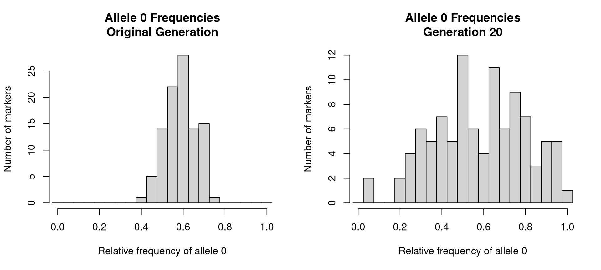
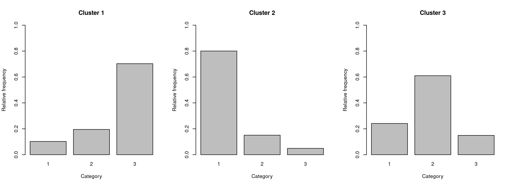

Assignment 3 · R functions and Monte Carlo simulation
Simulation and probability
Built three simulation models: genetic inheritance over 21 generations, arrivals across 1,000 retail days, and 10,000 five-variable observations from a categorical mixture.
RFunctionsMonte CarloProbability



What this demonstrates
- Used custom functions, arrays and loops to model inheritance.
- Simulation estimated 96.68 daily customers in the submitted run.
- Compared random mixture samples with known generating probabilities.
Code preview
First 34 lines shown. Open the full script above for everything.
# Probabilistic simulation: genetic drift, customers and latent groups
# Extracted from my DATA202 Assignment 3 (code chunks in their original order).
# Requires base R only. From inside this project folder run:
# source("simulations.R")
set.seed(9876)
N <- 50
L <- 100
num_generations <- 21
# Make a new generation from the previous one
breed_new_gen <- function(df) {
N <- nrow(df)
L <- ncol(df) / 2
df_new <- matrix(NA_integer_, nrow = N, ncol = L * 2)
for (i in 1:N) {
# Pick two different parents for this child
parent_idxs <- sample(1:N, 2, replace = FALSE)
parent1 <- parent_idxs[1]
parent2 <- parent_idxs[2]
# Randomly choose which copy each parent passes on at every marker
allele_idxs <- matrix(
sample(1:2, L * 2, replace = TRUE),
nrow = L,
ncol = 2
)
for (l in 1:L) {
# The first copy comes from parent 1
df_new[i, 2 * (l - 1) + 1] <-The images are from my submitted coursework HTML report; grades are reported by the student.